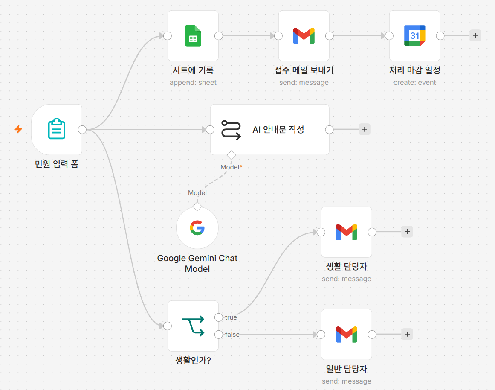
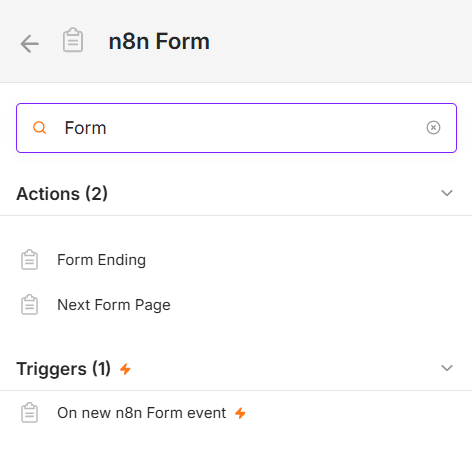
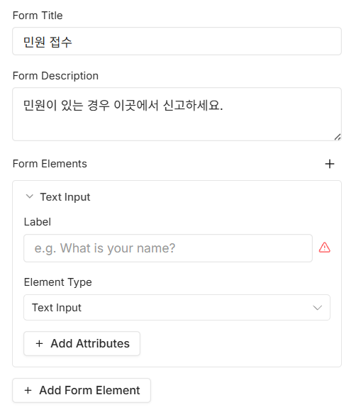
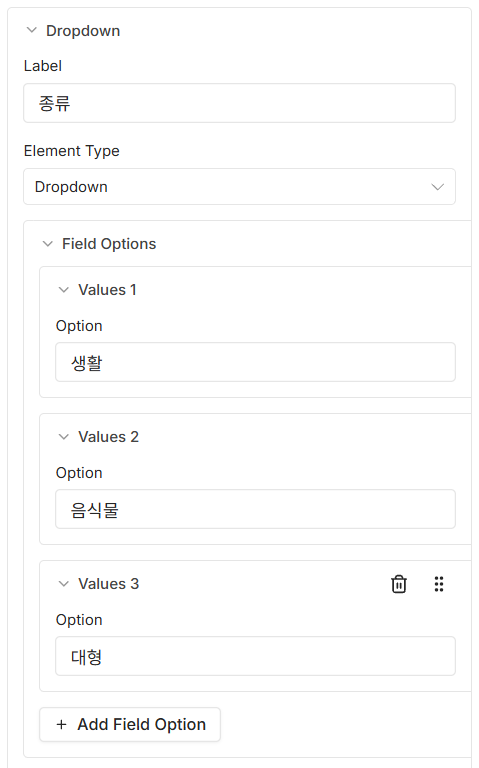
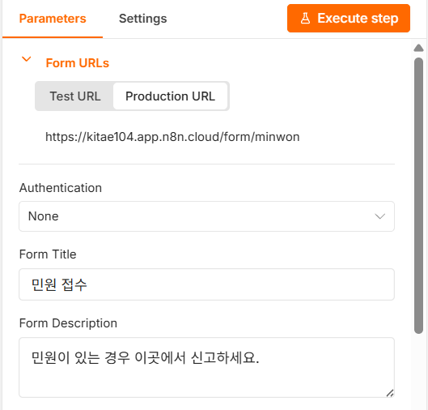

08 입력 폼으로 실제 접수받기
수동 실행을 폼으로 바꿉니다
왜 이게 필요한가
지금까지 만든 것에는 결정적인 한계가 하나 있습니다.
민원 내용이 워크플로우 안에 박혀 있다는 점입니다.
샘플 민원 노드에 김기태·010-1111-2222가 적혀 있고,
몇 번을 실행하든 언제나 그 사람의 그 민원이 처리됩니다.
진짜로 쓰려면 민원인이 직접 입력할 창구가 있어야 합니다. 그리고 그 창구는 n8n에 로그인하지 않은 사람도 열 수 있어야 합니다. 민원인에게 n8n 계정을 만들라고 할 수는 없으니까요.
이번 시간에는 트리거를 입력 폼으로 바꿉니다. 그러면 링크가 하나 생기고, 그 링크를 받은 사람은 누구나 민원을 넣을 수 있습니다. 폼이 제출되는 순간 지금까지 만든 것이 한꺼번에 돕니다. 그 순간 이것은 연습이 아니라 서비스가 됩니다.
이번 시간에 만들 것
지금까지 직접 실행 버튼으로 테스트하던 워크플로우를, 누구나 웹 폼으로 민원을 입력하면 자동으로 시작되도록 바꿉니다.
민원 입력 폼 하나로 바뀌었습니다
앞의 수동 실행·샘플 민원
두 노드가 사라지고 클립보드 모양의 민원 입력 폼 노드 하나가
그 자리에 들어갔습니다. 그 뒤로는 07강까지 만든 그대로입니다.
[그림 8-1]에서 폼 노드에서 나가는 선은 세 개입니다 —
시트에 기록, AI 안내문 작성,
생활인가?. 접수 메일 보내기와
처리 마감 일정은 시트에 기록 뒤로
이어져 있어 폼에서 따로 선이 나가지 않습니다.
따라하기
- 기존 트리거·데이터 노드 지우기
폼 트리거 하나가
수동 실행(워크플로우를 시작시키는 일)과샘플 민원(민원 데이터를 만드는 일)이 나눠 맡던 두 가지 일을 혼자 다 합니다. 그래서 두 노드는 더 이상 필요 없습니다.수동 실행노드를 클릭해 선택한 뒤 키보드의Delete키를 누릅니다. 같은 방법으로샘플 민원노드도 지웁니다. 두 노드를 지우면 거기서 뻗어 나가던 선도 함께 사라집니다. 노드 자체는 지워지지 않고 연결만 끊어진 채 남아 있으니 걱정하지 마세요 — 곧 다시 이어줍니다. 지금 왼쪽 입력점이 비어 버린 노드가 어느 것인지 눈으로 확인해두면 7단계가 쉬워집니다. - Form Trigger 노드 추가하기
지금까지는 기존 노드 오른쪽의
+를 눌러 다음 노드를 추가했지만, 이번에는 기준이 될 노드가 없습니다. 빈 캔버스 가운데의 안내(첫 단계 추가와 비슷한 문구입니다)를 눌러 노드 검색창을 엽니다. 검색창에Form을 입력하면n8n Form이라는 묶음이 나오는데, 그 안은 다시Actions와Triggers로 나뉩니다.Triggers아래의On new n8n Form event를 고릅니다.Actions쪽 항목을 고르면 안 됩니다 같은 화면 위쪽Actions에 있는Form Ending·Next Form Page는 폼을 여러 장으로 만들 때 쓰는 노드라 워크플로우를 시작시키지 못합니다. 번개 표시()가 붙은Triggers쪽을 고르세요.[그림 8-2] 검색 결과에서On new n8n Form event고르기
- 폼 제목·설명 입력하기
Form Title칸에민원 접수를,Form Description칸에민원이 있는 경우 이곳에서 신고하세요.를 입력합니다. - 필드 다섯 개 추가하기
Form Description아래에Form Elements라는 영역이 있고, 그 맨 아래에+ Add Form Element버튼이 있습니다. 요소가 하나 이미 들어 있으면 그것을 첫 번째로 쓰고 버튼을 네 번 더, 하나도 없으면 다섯 번 눌러 모두 다섯 개를 만듭니다.요소 하나를 펼치면 이름을 적는
n8n 버전에 따라Label칸과 종류를 고르는Element Type드롭다운이 있습니다. 필수 입력으로 만들려면 그 아래+ Add Attributes를 눌러Required Field를 추가한 뒤 켜면 됩니다.Required Field스위치가 요소 안에 처음부터 보이기도 합니다. 그럴 때는 그 스위치를 바로 켜면 됩니다. 드롭다운 항목의 정확한 문구도 버전마다 다를 수 있으니, 아래 괄호 안 설명에 맞는 뜻의 항목을 고르세요.Label을 비워두면 칸 오른쪽에 빨간 경고 표시가 뜹니다 — 아직 안 적었다는 뜻이니 이름을 적으면 사라집니다.[그림 8-3]Form Elements영역과 요소 한 개의 구성
이름—Label에이름입력,Element Type은 짧은 한 줄 글자(Text Input), 필수 켜기
연락처—Label에연락처입력, 종류는Text Input, 필수 켜기
이메일—Label에이메일입력, 종류는 이메일 뜻의 항목, 필수 켜기
종류—Label에종류입력, 종류는Dropdown(선택 목록), 필수 켜기
상세설명—Label에상세설명입력, 종류는 여러 줄 글자(텍스트 영역) 뜻의 항목, 필수 켜기 종류필드에 드롭다운 옵션 넣기종류요소의Element Type을Dropdown으로 고르면 그 아래Field Options라는 영역이 새로 나타납니다. 그 안에Values 1·Values 2…처럼 번호가 붙은 칸이 생기고, 각 칸 안의Option에 값을 적습니다. 칸이 모자라면 맨 아래+ Add Field Option을 눌러 늘립니다. 모두 세 칸을 만들고 순서대로생활,음식물,대형을 입력합니다. 여기 적는 세 값이 폼 화면의 선택지가 되고, 07강생활인가?조건이생활과 비교하는 값이 됩니다. 철자를 정확히 맞추세요.[그림 8-4]종류요소의 드롭다운 옵션 세 개
- 노드 이름 바꾸기
노드 제목을 더블클릭해
민원 입력 폼으로 바꿉니다. - 끊어진 노드에 다시 연결하기
민원 입력 폼노드 오른쪽 출력점에서 선을 끌어다 놓는 방식으로, 1단계에서 왼쪽 입력점이 비어 버린 노드에 선을 다시 이어줍니다. [그림 8-1] 기준으로는시트에 기록,AI 안내문 작성,생활인가?세 곳입니다.접수 메일 보내기와처리 마감 일정에는 선을 잇지 않습니다 —시트에 기록뒤로 이미 이어져 있어서, 앞 노드가 연결되면 따라서 함께 실행됩니다. 다 이었는지 확인하는 기준은 하나입니다 — 왼쪽 입력점에 선이 하나도 붙어 있지 않은 노드가 남아 있으면 안 됩니다. 방금 지운수동 실행·샘플 민원자리를민원 입력 폼하나가 대신하는 것뿐이고, 뒤쪽 노드는 그대로 남아 있었습니다. 선만 다시 이어주면 됩니다.
시트에 기록부터 일반 담당자까지
뒤에 남은 노드들의 설정은 전혀 바꾸지 않았습니다. 폼의 필드 레이블이
샘플 민원에서 쓰던 이름과 완전히 같기 때문에
{{ $json.이름 }} 같은 표현식이 그대로 동작합니다.
데이터를 넘겨주는 이름을 앞뒤로 맞춰두면, 나중에 데이터가 폼에서 오든
다른 곳에서 오든 트리거만 바꿔 끼우면 됩니다 — 자동화를 오래 쓰는
요령입니다.
실행하고 확인하기
민원 입력 폼 노드를 열면 패널 맨 위에
Form URLs라는 항목이 있고, 그 안에
Test URL·Production URL 두 개의
탭이 있습니다. 워크플로우 오른쪽 위의 활성화 스위치를 켠 뒤
Production URL 탭을 고르면
https://내주소.app.n8n.cloud/form/… 형태의 실제 폼 주소가
나옵니다. 그 주소를 복사해 새 브라우저 탭에서 열어 실제로 민원을 입력하고 제출해
봅니다.
Form URLs 항목
그 아래 Authentication은
None 그대로 둡니다. 링크를 가진 사람은 누구나 폼을 열 수
있다는 뜻이고, 이번 실습에서는 이게 맞습니다.
제출하면 시트에 새 줄이 추가되고, 접수 메일이 오고, 3일 뒤 캘린더
일정이 잡히고, 입력한 종류에 따라
[생활 관련] 민원 또는 [일반]
민원 메일까지 도착합니다 — 1일차에 만든 모든 것이 한 번에
동작합니다.
아직 활성화하지 않고 테스트만 하고 싶다면, 아래쪽
Execute workflow를 누른 뒤 같은
Form URLs에서 Test URL 탭을
고릅니다. 한 번만 쓸 수 있는 임시 폼 주소가 나오는데, 그 주소로 제출해도 같은
결과를 확인할 수 있습니다.
안 될 때
폼 주소를 열어도 화면이 안 뜹니다 — 워크플로우가
활성화(Active)되어 있는지 확인하세요. 활성화하지 않았다면
Execute workflow로 받은 임시 주소를 대신
쓰세요.
제출했는데 아무 일도 일어나지 않습니다 — 캔버스를 훑어보며 왼쪽 입력점에 선이 하나도 붙어 있지 않은 노드가 있는지 확인하세요. 선이 빠진 노드만 실행되지 않습니다.
일부만 되고 나머지는 안 됩니다 — 예를 들어 시트에는 줄이 쌓이는데
메일이 안 온다면, 시트에 기록 뒤에 이어진
접수 메일 보내기와의 선이 끊어졌을 수 있습니다.
실행 후 초록색으로 바뀌지 않은 선을 따라가 보세요.
시트나 메일에 값이 비어 들어갑니다 — 폼 필드의 레이블 철자가
샘플 민원에서 쓰던 이름(이름·연락처·이메일·종류·상세설명)과
정확히 같은지 확인하세요. 철자가 다르면 하류 노드의 표현식이 그
이름을 찾지 못합니다.
활성화 스위치가 눌리지 않습니다 — 트리거가
Form Trigger인지 확인하세요.
수동 실행 같은 수동 트리거는 활성화할 수
없습니다.
이번 단계 워크플로우 받기
따라오다 막혔다면 이 파일을 받아 n8n에서 불러오면 이어서 진행할 수 있습니다.
시트에 기록·
접수 메일 보내기·처리 마감 일정·
Google Gemini Chat Model·생활 담당자·
일반 담당자 여섯 노드를 각각 열어 자격증명을 다시 골라야
합니다. 시트에 기록의 Document 칸과
처리 마감 일정의 Calendar 칸에는 각각
여기에_본인_시트_ID·본인이메일@example.com
자리표시자가, 생활 담당자·일반 담당자의
To 칸에도 본인이메일@example.com
자리표시자가 들어 있으므로 모두 본인 값으로 바꿔야 합니다(이번 강의부터
이메일 값은 폼 입력을 그대로 쓰므로 따로 바꿀 자리표시자가
없습니다). 시트 탭 이름은 시트1로 들어 있으니 본인 시트의
탭 이름이 다르면 목록에서 다시 골라야 합니다.